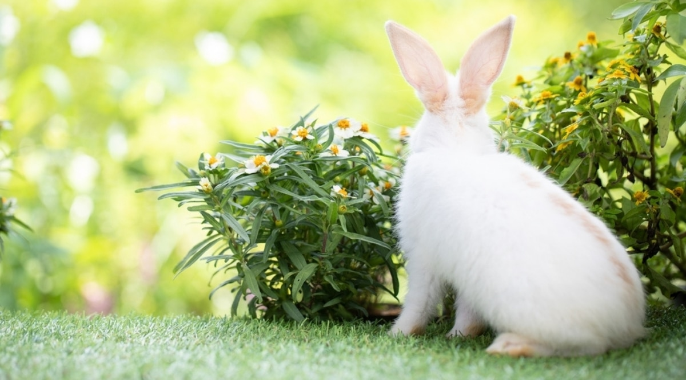
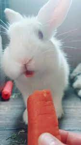
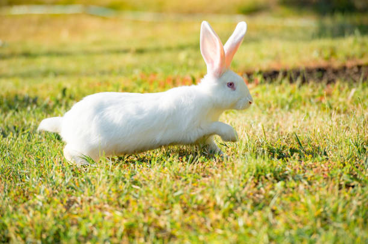

Bacon Q Dog

Bacon Q. Dog is a 9yr old labradoodle. He prefers to spend his days lounging among the three different beds/couches that his family has gifted him. He enjoys a walk or two around the neighborhood, as long as he can pretend that he doesn't see any of the other animals to avoid the embarrassment of not wanting to admit he has no wolf-like skills in chasing them.
At night just as the rest of the family is ready to relax, Bacon suddenly wants to release all of his energy. He will place his toys on a mini couch and frantically drag the couch around, giving his toys "a ride." There is also a lot of rolling. Lots and lots of rolling.
Photo Gallery


Likes
- Belly rubs
- Playing tug-of-war
- Sneaking onto the couch
Coco Parrot

Coco is an amazing parrot with bright, white feathers. Coco is 4 years old and brings lots of fun to our home with his playful nature and impressive talking skills.
During the day, Coco loves sitting on his favorite branch and making all sorts of sounds, from chirps to whistles. He can mimic voices and sounds, like the ones you hear around the house or on the radio, which always makes us smile.
Photo Gallery


Likes
- Mimicking sounds and talking
- Playing with colorful toys and puzzles
- Enjoying fresh fruit and nuts
Luna Kitten

Luna is an incredibly cute and playful kitten with a coat that's a lovely mix of gray and white, like a cozy winter day. She's a 7-month-old kitten who brings joy and lots of energy to our home.
During the day, Luna loves to chase feather toys, jump around the room, and explore everywhere. Her playful behavior and endless curiosity make everyone in the family smile.
Photo Gallery


Likes
- Chasing feather toys
- Napping in cozy spots
- Cuddling with human
Ruby Rabbit

Ruby is a charming and fluffy rabbit with soft, white fur and lively pink eyes. She's a 2-year-old rabbit who brings a sweet touch to our home with her gentle personality and love for nibbling on carrots.
During the day, Ruby enjoys hopping around the garden, munching on fresh greens, and sometimes doing happy bunny hops called "binkies." Her cute twitching nose and floppy ears are hard to resist for anyone who meets her.
Photo Gallery
  Likes
- Munching on fresh vegetables
- Hopping around the garden
- Being petted and cuddled
Todd Turtle

Todd is a lovable pet turtle with a strong shell and a calm personality. He's a 5-year-old turtle who moves at his own pace but brings a sense of peace and comfort to our home.
During the day, Todd enjoys relaxed swimming in his tank or basking in a cozy spot. He really loves fresh vegetables and fruits, and he eats them with great joy.
Photo Gallery


Likes
- Relaxing while swimming in his tank
- Basking in the warmth of the sun
- Delighting in fresh vegetables and fruits